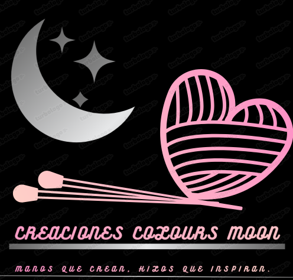

Bienvenidos a Creaciones Colours Moon
Amigurumis en Creaciones Colours Moon
En Creaciones Colours Moon, nos dedicamos a ofrecer una amplia variedad de amigurumis hechos a mano, cada uno cuidadosamente tejido con materiales de alta calidad. Nuestro objetivo es compartir el encanto de estos muñecos únicos y coloridos con personas que aprecian el arte del crochet. Desde amigurumis para decorar tu hogar hasta regalos personalizados, tenemos algo para cada ocasión.
Explora Nuestra Colección
Te invitamos a explorar nuestra galería y encontrar el amigurumi perfecto para ti. Cada pieza refleja la pasión y dedicación que ponemos en nuestro trabajo. No dudes en contactarnos si tienes alguna idea especial en mente o si deseas hacer un pedido personalizado. ¡Estamos aquí para crear magia con hilo!
